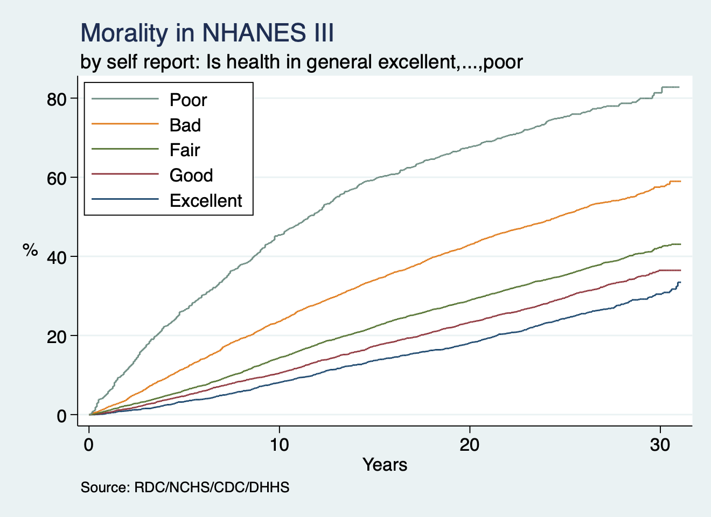

Abstract#
All-cause mortality in the US Adults, NHANES 1988-2018 surveys using a user-friendly Stata program
Wafa Aldhaleei, MD, MSc, Johns Hopkins Bloomberg School of Public Health, Baltimore, MD, 21213 Sungmin Park, MD, Johns Hopkins Bloomberg School of Public Health, Baltimore, MD, 21213
Background: The National Health and Nutrition Examination Survey (NHANES) is a program of studies designed to evaluate the health and nutritional status of adults in the United States. We are developing skills that allow us to access publicly available large databases that may be queried to answer fundamental questions about the publics health. These datasets might exist in formats unfamiliar to Stata users or in sizes that cripple ones workflow.
qui do https://raw.githubusercontent.com/jhustata/book/main/nhanes-alpha.ado
Methods: For Stata/BE or IC users this current program outputs an NHANES dataset with 22 pre-specified variables. We curated a dataset with all the mortality records in the United States from 1959-2017 and wrote a basic Stata script that output a two-way plot showing annual trends in number of deaths during this period. We wrote a Stata program, mortality, that allows the user to define the time-period of interest, plus other parameters such as cause-of-death, and ultimately produce a similar two-way plot with the convenience of a Stata command.
{kind=link}
Results: We can see from the graph that poor and bad nutrition groups are associated with a higher mortality rate over time.
set scheme s2color
nhanes
capture program drop unilogit
program define unilogit
syntax varlist [if], [outcome(string)]
quietly foreach var of varlist `varlist' {
logistic `outcome' `var' `if', nolog
lincom `var'
local sig_p: di %4.3f `r(p)'
if `sig_p' < 0.05 {
noi di "`var'" _col(15) "`sig_p'"
noi di "Significantly associated with `outcome':"
noi di "`var' (p=`sig_p')"
noi di ""
}
}
end
noi unilogit
Conclusions: Poor and bad nutrition is associated with higher mortality rates and are increasing with each decade.
use nh3andmort, clear
di "obs: `c(N)' & vars: `c(k)'"

Acknowledgments: We initially published our Stata output in a Jupiter-book hosted by Github. All the .html content of the book was produced in a Python environment; however, Stata .html output will gradually replace the Python-based output of the book as we truly become advanced Stata users!
VS Code terminal is our IDE choice for committing and pushing our git content to our hub and have established a seamless process for updating our publication.
References: